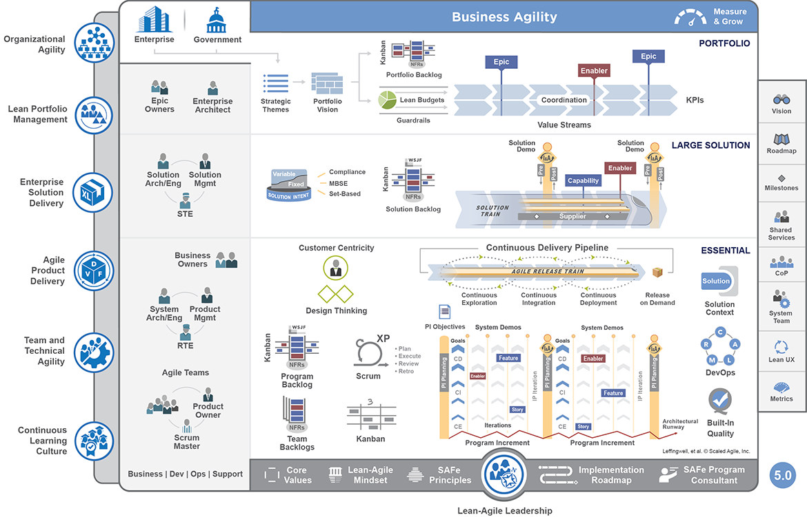
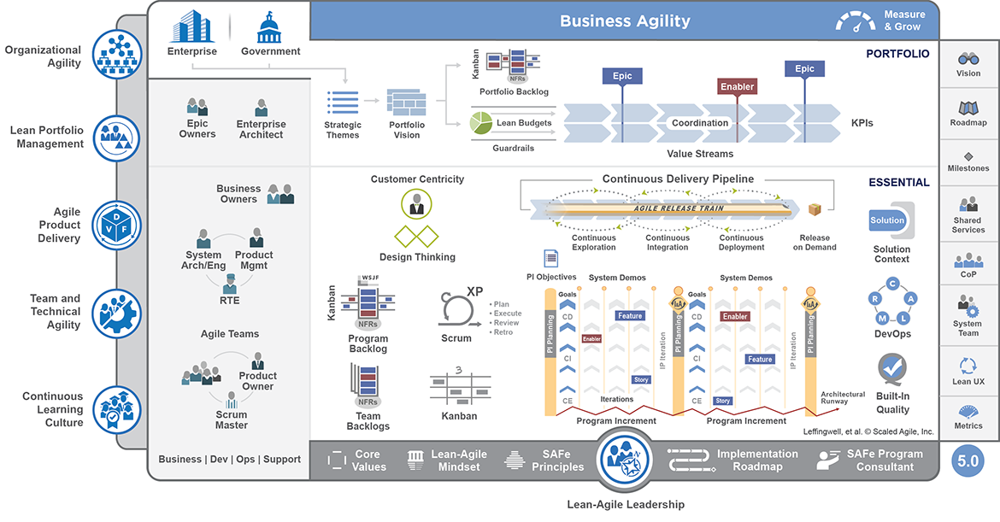

class: center, middle # Prozesse --- # Agenda 1. Einleitung 2. User-Centered Design 3. DaD 4. Nexus 5. LeSS 6. SAFe 7. Vergleich ??? kurze Einleitung kurzer Prozess --> ucd framework für Lebenszyklus --> dad 3 frameworks zur sklaierung --> nexus, safe, less abschließender vergleich --- # Einleitung Was erwartet euch? ??? Anfang: kennt jeder --> Beispiel kommt Software Lebenszyklus --> irgendwie selbstverständlich, in Feinheiten dann aber doch nicht Sklaierungsframeworks --> wozu brauche ich die eigentlich? was kann ich damit lösen? und was nicht? --- # User-Centered Design ## Useability Wikipedia definiert Useability so: "Usability bzw. Useability (engl. ‚Brauchbarkeit, [Be-]Nutzbarkeit, Bedienbarkeit‘) steht für - Gebrauchstauglichkeit (Produkt), im Produktdesign und der Ergonomie - Software-Ergonomie, in der Softwareentwicklung" ??? Schwerpunkt liegt eindeutig auf Benutzbarkeit nicht auf Design --- # User-Centered Design ## Beispiel für schlechte Useablity  ??? Wer kann diese Seite benutzen? Wer benutzt sie gerne? einfach alles überladen, unübersichtlich --- # User-Centered Design „Eine Software mit tollen Funktionen nützt mir nichts, wenn ich diese Funktionen nicht finde oder verwenden kann.“ - Aussage kennt jeder - Aussage stimmt jeder zu --> Warum gibt es so viel schlechte Useability? --> Wie kann eine gute Useability erreicht werden? ??? Grundgedanken zur Enstehung vom UCD (nächste Folie sind Gründe) --- # User-Centered Design ## Gründe - schwer zu findene Funktionalitäten - fehlende Funktionalitäten - mangelhafte Funktionalitäten --> meistens keine Absicht ??? Entwickler wissen es einfach nicht besser Entwickler sind technikversierte User, was für die Intuitiv ist, muss es nicht für die Zielgruppe sein manche Anforderungen kennen Entwickler einfach nicht Missverständnisse durch Interpretation von ungenauen Aussagen --- # User-Centered Design ## Prinzipien Design basiert auf einem Verständnis der Nutzbarkeit --- Nutzer werden über den gesamten Prozess eingebunden --- Design wird durch die Bewertung der Nutzer gesteuert --- Prozess ist iterativ --- User Experience als Ziel --- Projektteam ist multidiziplinär ??? Alle Anforderungen müssen verstanden werden Nutzer geben ENtwicklung Vorteile Prozess wird viele male durchlaufen --- # User-Centered Design  --- # User-Centered Design ## Analyse Wer benutzt das System? Wer ist von den Ergebnissen betroffen? --- Welche Benutzer gibt es? Welche Ziele und Aufgaben haben sie? --- Welche Daten werden während der Nutzung verarbeitet? --- In welcher Umgebung arbeitet der User (mit dem System)? - technisch, physisch, sozial ??? Fragen gilt es zu beanworten --- # User-Centered Design ## Analyse Beantwortung der Fragen mit Hilfe des Users --- Direkte und indirekte Interaktion mit dem User - Beobachtungen - Interviews ??? Viele Möglichkeiten zum EInholen von Feedback des Users --- # User-Centered Design ## Spezifikation Erkenntnisse in Nutzungsanforderungen umschreiben --- Erfordernis entspricht Vorraussetzung um Ziel im Nutzungskontext zu erreichen --- Beispiel: Vortragender muss wissen, wie viel Zeit er noch hat Anforderung: Sichtbarkeit der Restzeit --- # User-Centered Design ## Design Umsetzen der Anforderungen in Prototypen --- kreative Phase --- weniger Gestaltung der Oberfläche (Aussehen) --- mehr Gestaltung der Verhaltensweise ??? Zurückdenken an die Definition von useability: Nutzbarkeit, nicht Design!! --- # User-Centered Design ## Evaluation verschiedene Techniken zum Evaluieren - Befragung - Useability Test - ... ??? useability Test: Tracken des users bei der Bedienung durch Eye tracking usw... --- # User-Centered Design ## Vorteile 1. Kundenzufriedenheit 2. Produktsicherheit 3. Qualität 4. Nachhaltigkeit 5. Kosteneffizienz 6. Wettbewerbsvorteil 7. Niedrige Schulungskosten ??? manche Vorteile beansprucht jedes Vorgehen Wettbewerbsvorteil --> nur falls Konkurrenz kein Wert auf Useability legt Wettbewerbsvorteil --> Prozess ersetzt keine Ideen niedrige Schulungskosten --> auch Kontextabhängig, manche Software benötigt schulung, da sicherheitsrelevant (kürzere Schulung evtl.) --- # User-Centered Design ## Nachteile 1. verhindert echte Innovation 2. Herausforderungen ändern sich zu schnell 3. Ansatz nicht geeignet um passgenaue Lösung zu entwickeln ??? 1. user spezifizieren nur, was sie kennen 2. heute website, morgen, smart-watch, übermorgen chip in der haut --> entwicklung muss schnell gehen 3. Beispiel HOMAG: langjähriger Bediener vs. kurzzeit Mitarbeiter, Springer --- # DaD Disciplined Agile Delivery --- Denkschule um agile Praktiken anzuwenden und zu skalieren --- erweitert Scrum um einen End-to-End Lebenszyklus ??? Wichtig: keine große Variation von Scrum, nur Erweiterung nur Scrum nicht richtig: Bietet auch Varianten für Lean... --- # DaD ## Prinzipien __Erfreue Kunden__ Die Bedarfe der Kunden übertreffen --- __Sei großartig__ Teams fußen auf motivierten Mitarbeitern --- __Pragmatismus__ So effektiv wie möglich, nicht nur agil handeln --- __Kontext zählt__ Jede Person / Team / Organisation ist einzigartig --- # DaD ## Prinzipien __Auswahl ist gut__ Optionen und Wissen über die Vorteile sind wichtig --- __Optimiere den Fluss__ Arbeit von Teams muss aneinander ausgerichtet werden --- __Unternehmensbewusstsein__ Es zählen die Ziele der Organisation --- # DaD ## Agile Lifecycle <section> </section> ??? Bild spiegelt Scrum wieder bis zur Inception und Transition Phase Inception: Planung Transition: Wie verhalten bei fehlern? Änderungen? --- # DaD ## Vorteile berücksichtigt kompletten Lebenszyklus --- flexibler Einsatz auf Projekte --- Toolkit fokussiert auf die Mitarbeiter --- # DaD ## Nachteile kein Skalierungsansatz --- Entscheidungen aufgrund der hohen Flexibilität erforderlich ??? Lebenszyklus lässt viel Freiraum,,, Lebenszyklus muss gewählt werden --- class: center, middle Wer hat Erfahrung in Projekten mit mehreren Teams gleichzeitig? --- Was waren die Probleme in der Zusammenarbeit mit anderen Teams? ??? Falls sich niemand meldet: Eigene Erfahrung: Chaos--> linke hand weiß nicht was die rechte macht, was macht die Hardwareentwicklung gerade? Wieso muss ich auf die SPS Steuerung warten? --- # Nexus "Eine Beziehung oder Verbindung zwischen Personen oder Dingen" ??? klingt einfach? Ist die Übersetzung von nexus aus dem Lateinischen "Zusammenknüpfen" --- # Nexus minimales Framework zur Anwendung von Scrum in Teams --- Framework für Tranzparenz, Orientierung und Koordination --- Erweiterung des Scrum-Workflows um neue Rollen, Ereignissen und Artefakten --- 3-9 Teams ??? selbsterklärend --- # Nexus ## Ziele Minimierung von Abhängigkeiten zwischen parallel arbeitenden Teams --- Reduktion der Integrationsprobleme von erzeugten Teillösungen ??? Wenn möglich Bezug auf Ausgangsfrage zu Problemen Abstimmung zwischen den Teams... Integration funktioniert nicht --- # Nexus ## Rollen Nexus Integration Team --- coacht, koordiniert und stellt die korrekte Ausführung der parallelen Entwicklungsarbeit sicher --- Abhängigkeiten der Teams offen legen und lösen --- definiert das "Done" ??? Definition eines einheitlichen DONE ist wichtig!!! --- # Nexus ## Nexus Integration Teams __Product Owner:__ Verantwortlich für die Produktentwicklung, Fertigstellung eines Teilelements während eines Sprints --- __Scrum Master:__ Verantwortlich für Umsetzung und Verständnis von Nexus Framework --- __Nexus Integration Teammitglieder:__ Verantwortlich für einheitliches Verständnis und Einsatz der Praktiken in den Teams ??? Rollen sollten mit erfahrenen Entwicklern besetzt werden, damit genug Verständnis der Arbeit vorhanden ist Full-Time!! --- # Nexus <section> </section> ??? Rollen (Integration team bereits erklärt) Artefakte (Backlogs usw...) Events (Meetings) Ansonsten ( es ist scrum) Ausfühliche Erklärung der Bestandteile auf den nächsten Schwierigkeiten Die anderen Frameworks werden dadurch deutlich einfacher verständlich --- # Nexus ## Product Backlog Festhaltung und Verfeinerung von: - Anforderungen - Abhängigkeiten --- Teilnahme aller Teams --- # Nexus # Nexus Sprint Plannung Vertreter von jedem Team diskuieren Product Backlog Verteilen Aufgaben des Product Backlogs an die Teams Jedes Team plant eigenen Sprint --- __Ziele__ Für jedes Team: Sprint Ziele und Sprint Backlog Für alle: Nexus Sprint Backlog --- # Nexus ## Nexus Sprint Backlog enthält die die Aufgaben der Teams aus dem Product Backlog --- offenbart Abhängigkeiten zwischen den Teams --- # Nexus ## Development jedes Team integriert Arbeit in eine gemeinsame Umgebung zum Testen --- Integrationsfehler werden frühzeitig erkannt --- # Nexus ## Nexus Daily Scrum Vertreter von jedem Team benennen erkannte Integrationsprobleme --- # Nexus ## Daily Scrum Jedes Team hat einen eigenen Daily Scrum --- erkannte Integrationsprobleme werden addressiert und Lösungspläne erstellt --- # Nexus ## Nexus Sprint Review Feedback zur entwickelten Lösung --- Anpassungen im Product Backlog --- # Nexus ## Nexus Sprint Retrospective 1. Vertreter von jedem Team treffen sich um gemeinsame Schwierigkeiten zu findene 2. Jedes Team trifft sich um Schwierigkeiten zu erkennen und zu diskutieren 3. Vertreter treffen sich um Maßnahmen zu definieren --- # Nexus ## Nexus Sprint Retrospective __Fragen die beantwortet werden müssen:__ --- Gibt es Restarbeiten? Sind technische Schulden entstanden? --- Wurden alle Artefakte, insbesondere Code, häufig (jeden Tag) erfolgreich integriert? --- Wurde die Software erfolgreich gebaut, getestet und oft genug eingesetzt, um eine große Menge ungelöster Abhängigkeiten zu verhindern? --- # Nexus ## Vorteile Falls Scrum bekannt: Einfache Erweiterung der Methodik --- kostenlos erhältlich --- # Nexus ## Nachteile Limitierung auf 9 Teams Fokussierung auf Integrationsteam --- # LeSS "Large Scale Scrum is Scrum" Grundgedanke beschreibt das Vorgehen in dem Framework --- Ausnahme ab Entwicklungen mit mehr als 8 Teams --- Framework strebt nach dem Sweet-Spot so viele Vorgaben wie nötig, so wenige wie möglich ??? Ab Entwicklung mit 8 Teams: Erweiterung zu LeSS Huge --- # LeSS ## Prinzipien __Large-Scale Scrum is Scrum__ Im Kern Steht die Umsetzung von Scrum --- __Tranzparenz__ Gemeinsame Definition, Zusammenarbeit zwischen den Teams --- __Mehr mit weniger__ Reduktion von Ausschuss, Rollen- und Ergebnisdefinition ??? Gemeinsame Definition? Kenne wir schon z.B DONE auch gemeint: Jeder weiß was gtean wird Reduktion: Bekannte Rollen verwenden --- # LeSS ## Prinzipien __Gesamtproduktfokus__ Ein Product Backlog, Product Owner, Product Increment --- __Kundenzentrierung__ Häufiges Feedback vom Kunden und Blick aus der Kundenperspektive --- __Koninuierliche Verbesserung hinzu Perfektion__ Lieferung von fehlerfreien Produktentwicklung ??? Da war doch was? UCD fehlerfreie Produkte --> wünscht sich jeder :D --- #LeSS ## Prinzipien __Lean Denken__ Arbeit mit Respekt --- __Systemisches Denken__ Konzentration auf das Gesamtsystem --- __Empirische Prozesssteuerung__ Inspektion & Anpassung des Produktes, Prozesse, Organisation --- __Warteschlangentheorie__ Nutzung von Warteschlangenkonzepten (Managen von Multitasking) ??? Warteschlange--> Entstehung von Schulden --> mache das später, wird selten abgebaut Lean house: Fusst auf Respekt vor dem Mitarbeiter --- # LeSS ## Prinzipien <section> </section> --- # LeSS ## Workflow <section> <img src="./img/less.png" height="450" width="750"> </section> ??? Workflow ist bekannt Product Backlog + Product Owner Sprint Planning 1: was? Sprint Planning 2: Wie? Feature Teams... Koordination über extra Meetings mit Vertretern (bekannt) + Daily Scrum-Workflows Ende auch bekannt: Erst Vertreter, dann Teams, dann Review Endergebnis: einsetzbares Feature --- # LeSS ## LeSS Huge <section> </section> ??? Erweiterung um Feature Area Aber: Nur ein Product Owner, Ablauf ansonsten gleich zu LeSS --- # LeSS ## Vorteile wenig zusätzliche Konzepte --- arbeiten Einzelteams nach Scrum --> Einfache Skalierung der Vorgänge --- # LeSS ## Nachteile keine Hilfestellung hinsichtlich Unternehmensstrategie, -portfolio --- dient der Produktentwicklung nicht dem Produktmanagement ??? Frage: Hatte man vor LeSS daür zu verwenden? --- # SAFe Scaled Agile Framework --- Unternehmens- und Workflowmuster zur agilen Arbeit im Unternehmen --- kombiniert Ansätze aus - Scrum - Kanban - Lean - Extreme Programming - ... ??? klingt Umfangreich, ist es auch --- # SAFe ## Prinzipien <section> <img src="./img/prinzsafe.png" height="450" width="750"> </section> ??? Viele bekannte Punkte in den Prinzipien UCD Lean Thinking --> Getragen von Führung Ganze Organisation arbeitet agil Streben nach dauernder Verbesserung Anwendung von CI CD --- # SAFe ## Konfigurationen <section>  </section> ??? sehr groß --> Framework ist wirklich komplex teilweise gewollt --> Framework ist kostenlos, Umsatz durch Schulungen links Prinzipien, mitte wird erklärt Arbeiten von unten nach oben --- # SAFe ## Essential <section> <img src="./img/essential.png" height="350" width="750"> </section> ??? Teamebene sozusagen Scrum Team --> Backlogs --> CI, CD Team organisiert sich selber (Scrum mit XP anleihen, kanban), crossfunctional gibt daily meetings usw. dadrüber: Programmebene Design Thinking ---> Release Train (50-120 Leute) Teams springen auf Zug auf, solange wie nötig RTE: Release Train Engenieer --> mit Team verantwortlich für das programm nicht Feature Insgesamt: Einführung von 11 (Events (6 Arts, 5 Team), 7 Rollen (teilweise bekannt), 17 Items (12 Arts, 5 Teams) zur Unterstützung) Sehr genaue Vorgabe sehr komplex --> Aber nur Grundstufe --- #SAFe ## Large Solution <section> <img src="./img/large.png" height="350" width="750"> </section> ??? Zur Entwicklung von allergrößten Projekten (Tausende Mitarbeiter) Einführung von Solution train EInführung von neuen Rollen (6), Events (3) und Items (5) Rolle z.B.: Solution Managment: Arbeit mit dem Kunden, Spezifizierung der Anforderungen, Roadmap Beachtet jetzt auch Zulieferer Events: Planning, Demo, Inspektion Items: zum Beispiel Capability: Lösungsfähigkeit über mehrere ARTs Insgesamt: Beachtet jetzt auch Zulieferer und so --- # SAFe ## Portfolio <section>  </section> ??? Ausrichtung der Strategie nach dem Lösungen zum Wertfluss Nimm Rücksicht auf Werteketten (Mehrere Solutions im Unternehmen) Budgetplanung Visionen --- # SAFe ## Zusammenfassung komplex, nimmt allerdings Rücksicht auf viele Aspekte --- dient dem ganzen Unternehmen als Framework --- dient der Produktentwicklung --- #SAFe ## Vorteile kostenlos --- bietet Lösungen für größte Teams und Unternehmen an --- Bietet Hilfestellung für unerfahrene Unternehmen mit agilen Prozesssteuerung --- # SAFe ## Nachteile Hang zur Gigantonomie --- erfordert Expertenwissen in jedem Schritt --- unterschiedliche Namensgebung, konkurriert zu etablierten Modellen aus anderen Bereichen --- # Vergleich <style type="text/css"> .tg {border-collapse:collapse;border-spacing:0;} .tg td{font-family:Arial, sans-serif;font-size:14px;padding:10px 5px;border-style:solid;border-width:1px;overflow:hidden;word-break:normal;} .tg th{font-family:Arial, sans-serif;font-size:14px;font-weight:normal;padding:10px 5px;border-style:solid;border-width:1px;overflow:hidden;word-break:normal;} .tg .tg-q64d{background-color:#ffffff;color:#333333} </style> <table class="tg"> <tr> <th class="tg-q64d">Framework</th> <th class="tg-q64d">Nexus</th> <th class="tg-q64d">LeSS</th> <th class="tg-q64d">SAFe</th> </tr> <tr> <td class="tg-031e">Basis</td> <td class="tg-031e">Scrum</td> <td class="tg-031e">Scrum</td> <td class="tg-031e">Scrum, Kanban, XP</td> </tr> <tr> <td class="tg-031e">Fokus</td> <td class="tg-031e">Abhängigkeiten</td> <td class="tg-031e">Balance zwischen definierter Struktur und Prozesskontrolle</td> <td class="tg-031e">Agile Ausrichtung der gesamten Organisation</td> </tr> <tr> <td class="tg-031e">Größe</td> <td class="tg-031e">3-9 Teams</td> <td class="tg-031e">LeSS: 3-8 Teams<br>LeSS Huge: >8 Teams</td> <td class="tg-031e">über 100 Teams</td> </tr> <tr> <td class="tg-031e">Augenmerk</td> <td class="tg-031e">Tranzparenz, Einfachkeit</td> <td class="tg-031e">Wertstrom</td> <td class="tg-031e">Kundenzentriert</td> </tr> </table> --- # Und welches ist jetzt das Beste? eigene Entscheidung --> individuell für jedes Unternehmen --- Framework an die Anforderungen anpassen --- __ABER:__ Framework kann Ideen und Innovation nicht ersetzen garantiert keinen Erfolg, kann die Chance auf Erfolg jedoch steigern --- class: center, middle __Danke!__ --- # Bildquellen __Schlechte Useability (Folie 5)__ [Dr.Web](https://www.drweb.de/schlechte-websites-homepage/) --- __User-Centered Design (Folie 9)__ [IPI](https://www.ipi-gmbh.com/eine-nutzerorientierte-prozessdatenbank-dank-des-user-centered-design-process/) --- __DaD Lifecycle (Folie 20)__ [Palladio Consulting](https://www.palladio-consulting.de/disciplined-agile-delivery/) --- __Nexus (Folie 29)__ [Scrum.org](https://www.scrum.org/resources/scaling-scrum) --- # Bildquellen __LeSS (Folien 45/46/47) [LeSS.works](https://less.works/de) --- __SAFe (Folien 51/52/53/54/55)__ [SAFe](https://www.scaledagileframework.com/) --- # Quellen [SAFe](https://www.scaledagileframework.com/) [LeSS.works](https://less.works/de) [Scrum.org](https://www.scrum.org/resources/scaling-scrum) [Palladio Consulting](https://www.palladio-consulting.de/disciplined-agile-delivery/) [Kegon](https://www.kegon.de/wissen/blog/was-ist-neu-in-safe-5-0/) [Kayenta](https://www.kayenta.de/training-seminar/artikel/scaled-agile-framework-safe-r.html) [PMI](https://www.pmi.org/disciplined-agile/lifecycle) [t3n](https://t3n.de/news/agile-skalierungsframeworks-safe-less-nexus-1150190/) [think tank](https://www.thinktank.de/tabellarische-gegenueberstellung-der-agilen-skalierungsframeworks-nexus-less-und-safe/) [Useability in Germany](https://www.usability-in-germany.de/definition/user-centered-design-ucd) [zeix.com](https://zeix.com/durchdacht/2011/04/01/user-centered-design-in-sieben-punkten-kurz-erklart/) --- # Quellen [embedded software engenieer](https://www.embedded-software-engineering.de/eine-einfuehrung-in-den-user-centered-design-process-ucdp-a-785958/) [FU Berlin](http://www.inf.fu-berlin.de/inst/ag-se/teaching/S-BSE/326_weissgerber_UCD.pdf) [Informatik Aktuell](https://www.informatik-aktuell.de/management-und-recht/projektmanagement/agile-skalierung-kein-problem-das-less-framework.html) [mosaiic](https://www.mosaiic.com/blog/2018/04/24/large-scale-scrum-framework/) [dasScrumTeam](https://www.dasscrumteam.com/de/large-scale-scrum-less) [emendare](https://www.emendare.de/less-large-scale-scrum/)